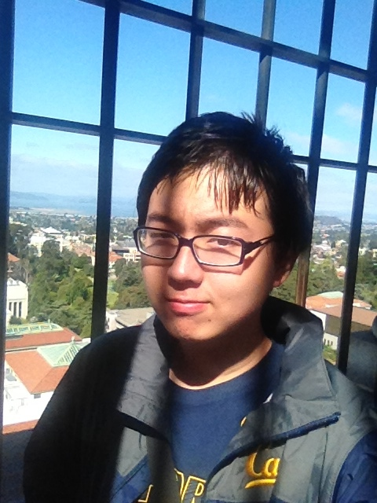

Kip Fulbeck describes in the introduction of the book Part Asian 100% Hapa that he is asked a single question almost every day of his life, “What are you?” (p. 11). He further explains how he thinks about this issue, and he provides hundreds of answers from other ethnically mixed people to this question in his book. From these answers, we can see that being “mixed” involves lots of aspects of life that are different from those of other people. One of the aspects that is particularly interesting is culture.

I would categorize ethnically mixed people in the book Part Asian 100% Hapa into three categories based on their cultural beliefs: monocultural, multicultural and undecided. Some people choose to identify themselves closely with one culture that they are most comfortable with. The man on page 26 explicit says that “I identify closely with the pacific islander culture”; the man on page 234 also states firmly that “(I am) a patriot, a strong supporter and true believer in the greatest country in the world, the United States of America”. I won’t consider these people being culturally mixed. On the other hand, there are people who embrace their multicultural background. On page 25, the man says, “this (identity) has helped me blend into any group or clique”; also on page 232, the women even claims, “I am part of a growing Hapa Community”. I admire these people’s courage and open-mindedness, but I believe that most of the rest of people are in the third category: they not so sure about which culture they truly belong to, just like the man on page 60 saying that “I am constantly debating whether the Chinese half is better than the Vietnamese half”.
Okay, interesting categorization, but what does it mean to be culturally mixed? Why are most of the people not so sure about which culture they “prefer”? Personally, I have an answer to these questions. As an international student studying in a place that is 13-hour-flight away from where I grow up, I have found that the cultural difference I observe reveals a fundamental contradiction of different ideologies. For example, students in the US are often encouraged to ask any questions to the professor while listening to a lecture and even challenge some authoritative ideas. They believe that critical thinking is one of the most important skills a student should possess. However, I was educated my whole life to only listen to the teacher and follow the instructions when I was back in the place where I grew up. The school characterized the students who followed the “rules” as “good kids” and those who did not as “bad kids”; they rewarded and honored the “good” and blamed and punished the “bad”. Asking questions during the lecture is interpreted as interrupting the class, and challenging the professor would be viewed as extremely disrespectful. This was the idea that was rooted deeply in my mind before I came here, and thus I was quite shocked by the different US culture and struggled to find my own position for quite a long time. I believe that many would have such struggles as well, and that is the reason why they find it difficult to “prefer” a single culture. Also, I believe the root of this difference originates from the culture. People in the US really care about freedom, justice and right while people in China think highly of respect, honor and history. This difference in culture and value system leads to this difference of behavior and how other people judge this behavior. Being cultural mixed therefore means that you are given two points of views at the same time, leveled up to a higher dimension of thinking about problems, and also involved in many questions that you might spend your whole life seeking the answer.


Another similar case can be noticed in the book The Absolutely True Diary of a Part-Time Indian. The protagonist Arnold Spirit left the Native American reservation where he grew up and went to the all-white high school where the students had never gone to school with a Native American before. From then on, he was considered an “alien” by both his people in the reservation, including his best friend, and his classmates in the high school, the white kids. The people on the reservation thought that he had betrayed them and thus alienated him; the students in the high school have never seen Native American before, labeled him as “weird”, and thus alienated him as well. It was really a hard time for Arnold: he had to fight to make people on the reservation believe that he still loved the reservation and make students in the high school recognize and respect him. However, the underlying conflict is the cultural difference between kids at the reservation and kids at the high school. Most of the inhabitant on the reservation has given up “hope”: all they want is to live on and live together; on the other hand, the white kids in the high school have “hope”: they want to go to college, they want to be successful in the future, they have pursuit in their life. Arnold has to find a position between these conflicting cultural beliefs and even establish his own philosophy of life, which is indeed hard.
If you were raised in a multicultural environment, how would you choose your belief? Maybe you would just forget about one culture and try to follow the expectations of the other one, but I would definitely choose to struggle to absorb essence from both cultures, reconcile the conflicts between them and try to establish my own view of the world.